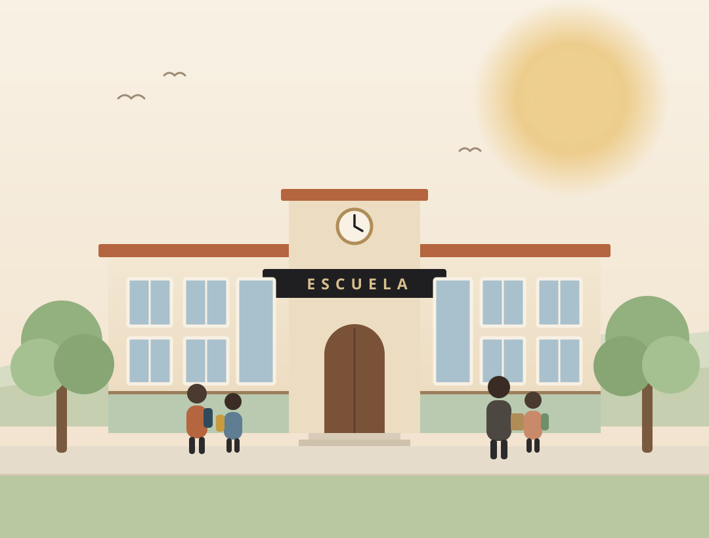

Educación
Becas: que ningún estudiante se quede sin saberlo
Repasamos las becas de primaria a universidad, quién puede pedirlas y qué documentos tener listos.
Leer más →Un espacio para que las familias de Chimalhuacán reporten lo que falla en sus escuelas, el transporte y sus calles, y encuentren información útil para el día a día.

Tu reporte llega directo al equipo del Profe Raúl Romero. Entre más detalle nos des (calle, colonia, desde cuándo pasa), mejor podemos darle seguimiento.
Información práctica para el día a día en Chimalhuacán. Toca cada tema para verlo completo.
Beca Rita Cetina para alumnos de escuelas públicas. El registro de este ciclo ya cerró; si no alcanzaste, pregunta en tu escuela o en tu sede de Becas Bienestar por el siguiente periodo.
PREPARATORIABeca Benito Juárez: $1,900 bimestrales para estudiantes de bachillerato público. El registro de este ciclo ya cerró; atento al próximo en becabenitojuarez.gob.mx.
UNIVERSIDADJóvenes Escribiendo el Futuro: $5,800 bimestrales. El registro se hace en SUBES.
Las preinscripciones para preescolar, primero de primaria y primero de secundaria del ciclo 2027-2028 serán del 2 al 12 de febrero de 2027, según el calendario de la SEP.
El registro se hace en línea en la plataforma que publique la Secretaría de Educación del Estado de México; si no tienes internet, la escuela te puede orientar.
Fuente: calendario escolar 2026-2027 publicado por la SEP.
Si hay tandeo o corte: guarda agua en recipientes limpios y tapados, prioriza beber y cocinar, y reporta fugas en la calle a ODAPAS Chimalhuacán o en nuestro buzón.
Ante cualquier emergencia: 911.
Para luminarias, baches o fugas, también puedes dejar tu reporte en el buzón y le damos seguimiento.
Los números municipales pueden cambiar; confírmalos en los canales oficiales del Ayuntamiento.
Pensión para Adultos Mayores: para personas de 65 años o más; entrega $6,400 cada dos meses. Es universal: se recibe aunque tengas pensión del IMSS o ISSSTE.
Pensión Mujeres Bienestar: para mujeres de 60 a 64 años.
El registro es gratuito y presencial en los Módulos del Bienestar, en los periodos que anuncia la Secretaría de Bienestar.
Consulta fechas y requisitos en programasparaelbienestar.gob.mx.
Aquí aparece lo más reciente de la página: los videos, los en vivos del Profe y la información útil que publicamos cada día. Se actualiza solo.

Profesor y director escolar que ha combinado la docencia con el trabajo comunitario en Chimalhuacán y el Estado de México.
“El trabajo correcto siempre trae algo bueno.”
Repasamos las becas de primaria a universidad, quién puede pedirlas y qué documentos tener listos.
Leer más →¿Qué falla en tu ruta de todos los días? Paradas sin luz, unidades en mal estado, horarios. Cuéntanos.
Reportar →Luminarias apagadas, baches, fugas o basura: cada reporte ayuda a ubicar dónde hace falta trabajo.
Reportar →